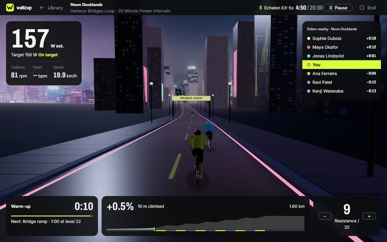
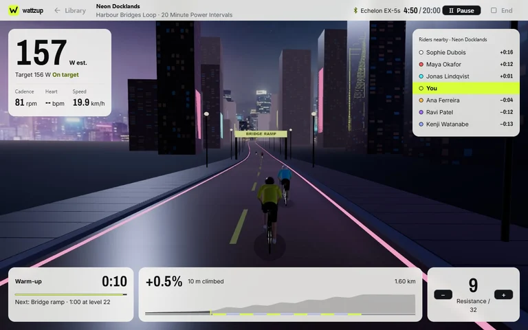
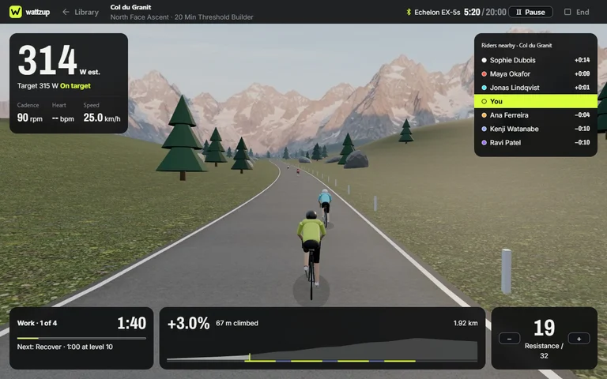
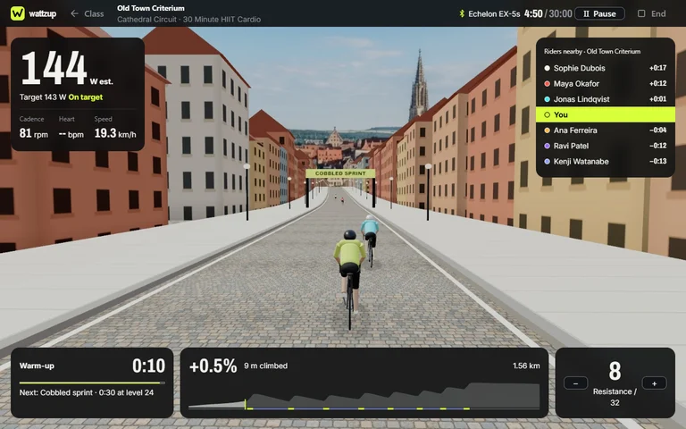
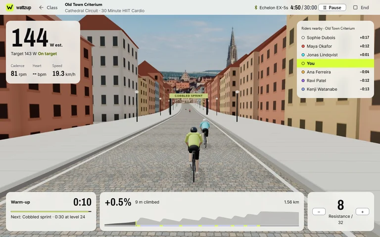

Neon Docklands
20 Minute Power IntervalsA harbour city after dark. Each one-minute effort is a bridge ramp over the docks.


Component · Library
Every class's world on one canvas, each card opening World Ride in that world.
The class worlds canvas puts every class's world side by side: its name, the class it carries, one sentence on how the road follows the plan, and a preview of World Ride in that world. Each card opens World Ride in that world.
It is a design canvas for reviewing the six worlds together, not a product screen; it has no requirement. If the product lets the rider pick a world, this card is the starting point.
A harbour city after dark. Each one-minute effort is a bridge ramp over the docks.


__title): the world, inside the link.__blurb): how the road follows the plan.__preview, __image--light, __image--dark): 8:5, one capture per theme.The link stretches over the whole card (__link::after), so the card is one target with a short accessible name.
A harbour city after dark. Each one-minute effort is a bridge ramp over the docks.
A mountain pass at first light. The threshold blocks are the steep ramps.


Cobbled streets on race day. Each of the eight sprints is a kick up to the cathedral.


One size: a card fills its grid cell, one to three per row.
| Variant | Default | Hover |
|---|---|---|
| Card | Col du Granit20 Min Threshold BuilderA mountain pass at first light. The threshold blocks are the steep ramps. | Col du Granit20 Min Threshold BuilderA mountain pass at first light. The threshold blocks are the steep ramps. |
Hover underlines the title; focus draws the system ring around the link. There is no disabled or selected card.
| Width | Cards per row |
|---|---|
| < 704 px | 1 |
| 704–1023 px | 2 (as many 20rem columns as fit) |
| ≥ 1024 px | 3 |
Page padding scales from 16 to 48 px; the gap is 24 px.
Cobbled streets on race day. Each of the eight sprints is a kick up to the cathedral.
Cobbled streets on race day. Each of the eight sprints is a kick up to the cathedral.
Each preview is captured in both themes; --theme-display-light and --theme-display-dark show the one that matches (see Theming). The mock branched on [data-theme] in component CSS instead.
Each card is an article holding one link (WAI-ARIA link); the grid has a page heading above it.
| Key | Action |
|---|---|
| Tab | Moves card to card. |
| Enter | Opens World Ride in that world. |
The ring is drawn on the link (title and class), which stays visible while the stretched target covers the card.
The link's name is the world and the class. Previews are named {world} ride preview; only the one for the current theme is displayed, so a screen reader hears one.
None.
The whole card is the target.
A harbour city after dark. Each one-minute effort is a bridge ramp over the docks.
[data-theme="dark"] .class-worlds__light { display: none; }[data-theme]; it misses prefers-color-scheme.A mountain pass at first light. The threshold blocks are the steep ramps.
Beautiful scenery and an amazing ride experience!
| Role | Token | Light | Dark |
|---|---|---|---|
| Title | --color-fg-default | ||
| Blurb | --color-fg-muted | ||
| Light capture | --theme-display-light | ||
| Dark capture | --theme-display-dark | ||
| Preview radius | --radius-lg | ||
| Grid gap | --space-6 | ||
<main class="class-worlds">
<h1>Where does each class ride?</h1>
<p class="class-worlds__lead">Every class gets its own world.</p>
<div class="class-worlds__grid">
<article class="class-worlds__card">
<a class="class-worlds__link" href="…"><h2 class="class-worlds__title">Neon Docklands</h2><strong>20 Minute Power Intervals</strong></a>
<p class="class-worlds__blurb">A harbour city after dark. Each one-minute effort is a bridge ramp over the docks.</p>
<div class="class-worlds__preview">
<img class="class-worlds__image class-worlds__image--dark" src="…-dark.webp" alt="Neon Docklands ride preview">
<img class="class-worlds__image class-worlds__image--light" src="…-light.webp" alt="Neon Docklands ride preview">
</div>
</article>
</div>
</main>From pages/class-worlds/default.
Drift fixed: theme branching replaced by --theme-display-*; element selectors (article, h2, p) replaced by BEM elements.